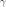

GumbelLambdaGamma¶
- class GumbelLambdaGamma(*args)¶
Gumbel rate/location parametrization.
- Parameters
- lambdafloat
Rate parameter .
- gammafloat
Location parameter.
See also
Notes
The native parameters are defined as follows:
The  parameter is the same.
Examples
Create the parameters of the Gumbel distribution:
>>> import openturns as ot >>> parameters = ot.GumbelLambdaGamma(2.0, 0.5)
Convert parameters into the native parameters :
>>> print(parameters.evaluate()) [0.5,0.5]
Methods
__call__(inP)Call self as a function.
evaluate()Compute native parameters values.
Accessor to the object's name.
Get the description of the parameters.
Build a distribution based on a set of native parameters.
getId()Accessor to the object's id.
getName()Accessor to the object's name.
Accessor to the object's shadowed id.
Accessor to the parameters values.
Accessor to the object's visibility state.
gradient()Get the gradient.
hasName()Test if the object is named.
Test if the object has a distinguishable name.
inverse(inP)Convert to native parameters.
setName(name)Accessor to the object's name.
setShadowedId(id)Accessor to the object's shadowed id.
setValues(values)Accessor to the parameters values.
setVisibility(visible)Accessor to the object's visibility state.
- __init__(*args)¶
- getClassName()¶
Accessor to the object’s name.
- Returns
- class_namestr
The object class name (object.__class__.__name__).
- getDescription()¶
Get the description of the parameters.
- Returns
- collection
Description List of parameters names.
- collection
- getDistribution()¶
Build a distribution based on a set of native parameters.
- Returns
- distribution
Distribution Distribution built with the native parameters.
- distribution
- getId()¶
Accessor to the object’s id.
- Returns
- idint
Internal unique identifier.
- getName()¶
Accessor to the object’s name.
- Returns
- namestr
The name of the object.
- getShadowedId()¶
Accessor to the object’s shadowed id.
- Returns
- idint
Internal unique identifier.
- getVisibility()¶
Accessor to the object’s visibility state.
- Returns
- visiblebool
Visibility flag.
- gradient()¶
Get the gradient.
- Returns
- gradient
Matrix The gradient of the transformation of the native parameters into the new parameters.
- gradient
Notes
If we note the native parameters and
 the new ones, then the gradient matrix is
the new ones, then the gradient matrix is  .
.
- hasName()¶
Test if the object is named.
- Returns
- hasNamebool
True if the name is not empty.
- hasVisibleName()¶
Test if the object has a distinguishable name.
- Returns
- hasVisibleNamebool
True if the name is not empty and not the default one.
- inverse(inP)¶
Convert to native parameters.
- Parameters
- inPsequence of float
The non-native parameters.
- Returns
- outP
Point The native parameters.
- outP
- setName(name)¶
Accessor to the object’s name.
- Parameters
- namestr
The name of the object.
- setShadowedId(id)¶
Accessor to the object’s shadowed id.
- Parameters
- idint
Internal unique identifier.
- setValues(values)¶
Accessor to the parameters values.
- Parameters
- valuessequence of float
List of parameters values.
- setVisibility(visible)¶
Accessor to the object’s visibility state.
- Parameters
- visiblebool
Visibility flag.